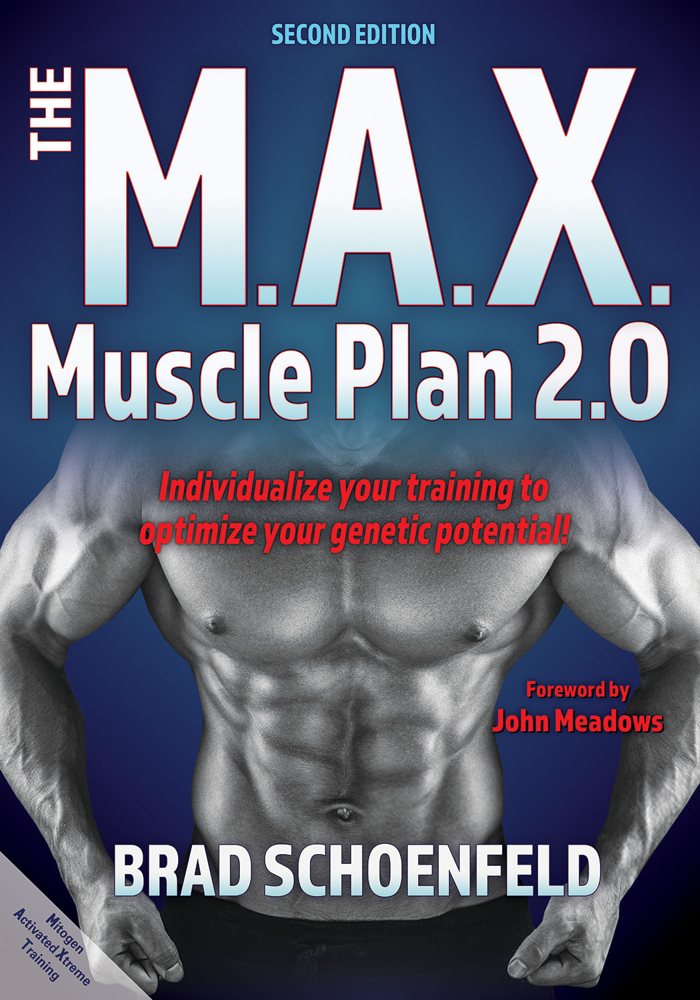

Max Muscle Plan
The MAX Muscle Plan
Brad Schoenfeld, PhD
USA List Price : $26.95.
BUY IT NOW! from Amazon.com at a discount!
Format: Paperback
ISBN: 171820714X
Audiences:
Anyone who wants to optimize muscular development!
About The MAX Muscle Plan. . .
Widely regarded as one of America's leading strength and fitness professionals, Brad Schoenfeld has won numerous natural bodybuilding titles and has been published or featured in virtually every major fitness magazine. Now the best-selling author brings his expertise to a resource that has everything needed for completing a total-body transformation in just six months.
The M.A.X. Muscle Plan 2.0, Second Edition, is packed with step-by-step directions for 106 of the most effective exercises and over 200 photos that demonstrate the revolutionary muscle-building program. Schoenfeld provides a science-based program specifically designed to promote lean gains and help you reach your ultimate muscular potential. The book's three-phase total-body program can be customized to your individual needs to dramatically transform your physique in just six months' time. For those who are relatively new to resistance training or are coming back from a prolonged layoff, there is a M.A.X. break-in routine designed to prepare the body to deal with the rigorous nature of the M.A.X. Muscle Plan program. Further, there are chapters devoted to providing cardio training guidelines and nutrition recommendations, based on the latest scientific research, that complement the M.A.X. Muscle Plan program.
The second edition has been completely revamped to include updated science and research-based evidence as well as 12 sidebars that break down specific topics and offer applied examples. Two new chapters have also been added: a chapter with detailed information on the M.A.X. Muscle Plan warm-up and a Q&A chapter that provides answers to 13 common questions Schoenfeld has received since the first edition of the book.
Results from The M.A.X. Muscle Plan 2.0 speak for themselves; thousands have successfully transformed their bodies by following the program. It is the blueprint for achieving and maintaining maximal muscle development..
About the Author. . .
Brad Schoenfeld, PhD, CSCS, CSPS, CPT, FNSCA is internationally regarded as one of the foremost authorities on muscle hypertrophy. The 2011 National Strength and Conditioning Association (NSCA) Personal Trainer of the Year, Schoenfeld is a lifetime drug-free bodybuilder who has won multiple natural bodybuilding titles. As a personal trainer, he has worked with numerous elite-level physique athletes, including many top pros.
Schoenfeld was the recipient of the 2016 Dwight D. Eisenhower Fitness Award, which is presented by the United States Sports Academy for outstanding achievement in fitness and for contributions to the growth and development of sport fitness through outstanding leadership activity. He was also the 2018 cowinner of the NSCA Outstanding Young Investigator Award. He is the author of multiple fitness books, including Science and Development of Muscle Hypertrophy and Strong & Sculpted. He has been published or featured in virtually every major fitness magazine and has appeared on hundreds of television shows and radio programs across the United States.
Schoenfeld is a full professor of exercise science at Lehman College in the Bronx, New York, and is director of the graduate program in human performance and fitness. He earned his PhD in health promotion and wellness at Rocky Mountain University, where his research focused on elucidating the mechanisms of muscle hypertrophy and their application to resistance training. He has published more than 300 peer-reviewed scientific papers and serves on the editorial advisory boards for several journals, including the Journal of Strength and Conditioning Research and the Journal of the International Society of Sports Nutrition.
Contents. . .
Chapter 1. The Science of Hypertrophy: What Makes Muscles Grow?
Chapter 2. MAX Periodization
Chapter 3. Exercises for the Back, Chest, and Abdomen
Chapter 4. Exercises for the Shoulders and Arms
Chapter 5. Exercises for the Lower Body
Chapter 6. MAX Warm-Up
Chapter 7. MAX Break-in Routine
Chapter 8. MAX Strength Phase
Chapter 9. MAX Metabolic Phase
Chapter 10. MAX Muscle Phase
Chapter 11. MAX Nutrition
Chapter 12. The Cardio Connection
Chapter 13. MAX Muscle Plan Q&A